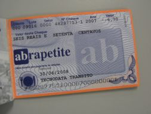

Todos os funcionários da Tecnodata recebem vale-transporte, no valor equivalente a dois passes por dia, e vale-alimentação, no valor de R$6,70 por dia.
O plano de saúde PROCLIN é opcional, ficando disponível aos funcionários contratados após o período de três meses de experiência. Caso o funcionário opte pelo uso do plano, a Tecnodata se encarrega do pagamento de 50% do valor.
O pagamento dos benefícios mencionados estão especificados no item 6 Pagamentos e Descontos.
Vale Alimentação

Plano de Saúde